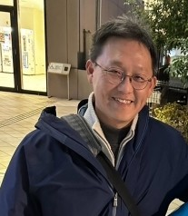
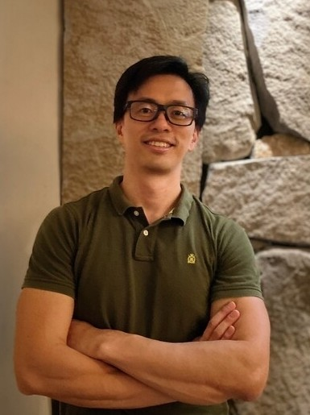

역대 센터장歷屆執行長
센터장은 학과 교원의 상호 선출로 선임됩니다. 2020년 설치 규정 통과 이후 세 명의 센터장이 이어받아, AI 사회 연구를 제도의 출범에서 교과목·커뮤니티·국제 공동연구의 전면적 전개로 이끌어 왔습니다.

초대 센터장 ・ 2020 – 2021
葉崇揚
둥우대학교 사회학과 교수 ・ Chung-Yang Yeh, Ph.D.
영국 사우샘프턴대학교 사회학·사회정책 박사, 국립중정대학교 사회복지 석사, 국립지난국제대학교 사회정책·사회복지 학사. 아시아대학교 사회복지학과 조교수, 중앙연구원 인문사회과학연구센터 박사후연구원을 거쳐 2024–2025년 나고야대학교 방문학자.
연구는 「비교 복지 레짐」의 틀에서 전개되며 동아시아 복지국가, 연금정책, 사회투자, 복지 태도, 빈곤과 생애과정에 걸칩니다. 최근에는 복지의 시장화·금융화와 규제형 복지국가의 부상에 주목하며, 인구 감소·고령화·격차 심화 속 대만의 정책 대응을 살핍니다. 과학기술부 신진교원 연구상(2019), 지난대학교 연구우수상(2021·2023·2025) 등 다수 수상. 자신의 작업을 「비교와 제도 분석 사이를 오가는 것—데이터는 검증 가능해야 하지만 사회는 언제나 모델보다 한 겹 더 많다」고 표현하며, 학술 외에도 약 30년간 사진 작업을 이어오고 있습니다.
재임 중 요점: 창설기 센터장. 2020년 1월 설치 규정이 통과된 뒤 제도적 기반 구축과 초기 기획을 맡아 「사회과학으로 AI를 연구한다」는 정체성을 확립하고 이후 교과목·연구의 틀을 마련했습니다. 현재도 구성원으로서 「동아시아 사회미래 랩」 학과 간 교원 커뮤니티를 공동 소집하고 있습니다.
→ 개인 사이트: chungyang1017.github.io

제2대 센터장 ・ 2022 – 2024
劉育成
둥우대학교 사회학과 교수 ・ Yu-Cheng Liu, Ph.D.
국립정치대학교 사회학 박사, 정치대학교 종교연구소 석사. 난화대학교 응용사회학과 부교수·조교수, 정치대학교 국제개발칼리지 박사급 학술지도교수, 정치대학교 사회학과 및 교통대학교 교양교육센터 겸임 조교수를 역임.
전공은 AI, 민속방법론, 시스템 이론, STS, 소셜디자인과 디자인 사고로, 대만 사회학계에서 가장 이른 시기에 AI를 체계적으로 연구한 학자 중 한 명입니다. 최근에는 「사회 현상으로서의 인공지능」과 자율주행 기술의 사회 연구에 주력하며, AI 사회학·프라이버시 실천·가속 사회·가족 시스템 이론 등을 주제로 국제 학술지 논문을 십여 편 발표했습니다. 사회학, 소셜디자인 개론, 사회 이슈 탐구와 실천 등을 담당하고 센터에서 「AI와 사회학」을 개설했습니다. 2026년, 주관하는 국과회(NSTC) 「칩 기반 인문」 세부과제가 이끌고 실천대학교 산업제품디자인학과 宮保睿, 큐레이터 陳湘汶과 공동으로 진행한 학제 작품 『80之後』(After the Age of 80)가 국제 디자인상 「미국 Core77 디자인상」 스페큘러티브 디자인(Speculative Design) 부문을 수상, 올해 해당 부문에서 대만 유일의 수상 아트·디자인 팀이 되어 대만의 사회 이슈 연구와 테크놀로지 아트를 국제 무대로 끌어올렸습니다.
재임 중 요점: 센터를 제도의 틀에서 실질적 운영으로 이끌었습니다. Medium 칼럼(rcais.medium.com)을 공공 집필의 장으로 개설하고, 「AI와 사회학」 등을 학과 커리큘럼에 편입했으며, 민속방법론의 관점에서 인간-기계 상호작용과 자율주행의 사회 연구를 시작해 「사회 현상으로서의 AI」라는 연구 접근을 빚어냈습니다.
→ 학과 소개 페이지: 둥우대학교 사회학과 — 劉育成

제3대 센터장 ・ 2025 – 현재
黃芳誼
둥우대학교 사회학과 부교수 / 인사실장 ・ Fang-Yi Huang, Ph.D.
미국 플로리다대학교 사회학 박사, 국립중정대학교 범죄방지학 박사수료, 국립대만사범대학교 교육학 석사 및 역사학/교육학 복수 학사. 위안즈대학교 사회·정책과학과 조교수, 중앙연구원 구미연구소 박사후연구원을 거쳐, 현재 국제정치학회(IPSA) 제25연구위원회 「보건정책정치학」 사무총장, 학술지 Health Politics 부편집장. 2025년 둥우대학교 우의기금회 레이더 젊은학자상 수상.
연구는 의료사회학, 사회복지 입법과 사회정책, 젠더 연구에 걸치며, 최근에는 연금의 젠더 격차, 비정형 노동자와 고령 여성의 노후 경제보장, 그리고 AI가 사회복지에 미치는 영향에 주력합니다. 「범죄학에서의 AI 활용」과 전학 공통 과목 「AI와 사회복지 증진」을 담당하고, 마이크로시뮬레이션 연구를 일반에 공개된 대·일·한 연금 시뮬레이터와 다큐멘터리 애니메이션으로 옮기는 「연구를 공공 커뮤니케이션 작품으로 바꾸는」 실천가입니다.
재임 중 요점: 센터의 역량을 전면적으로 확대. 한 학기에 15회의 강연 시리즈를 개최하고, 「동아시아 사회미래 랩」 학과 간 교원 커뮤니티를 공동 소집해 『AI 시대의 사회보장정책 백서(초안)』을 추진했습니다. 연세대학교의 6개국 「삼중 전환」 국제 공동연구에 참여하고, 고교생 AI 여름캠프를 총괄해 저변을 넓혔으며, 교육부 디지털 인문 혁신 인재 육성 계획·인문 AI 시범 계획의 참여 교원으로 선정되었습니다.
→ 개인 사이트: voyage213.github.io（소개・연구・저작・강의）